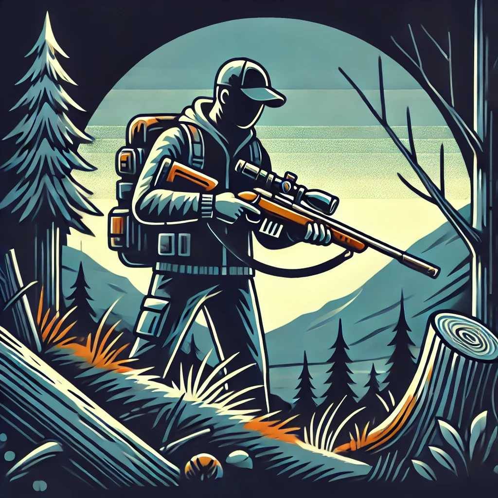

Firearm Basics: What You Need to Know About Gun Safety
Understanding firearm safety is crucial for anyone who owns or uses a gun. Proper handling and knowledge can prevent accidents and ensure that firearms are used responsibly. This guide covers the essential basics of gun safety.
1. The Four Fundamental Rules of Gun Safety
Always adhere to these four rules to maintain a safe environment when handling firearms.
The Four Rules:
- Treat Every Gun as if it’s Loaded: Always assume a firearm is loaded, even if you believe it isn’t.
- Never Point the Gun at Anything You’re Not Willing to Destroy: Keep the muzzle pointed in a safe direction at all times.
- Keep Your Finger Off the Trigger Until Ready to Shoot: Only place your finger on the trigger when you have aligned the sights on your target and made the decision to fire.
- Be Sure of Your Target and What’s Beyond It: Identify your target, its surroundings, and what lies beyond it to avoid unintended harm.
2. Safe Storage of Firearms
Proper storage is essential to prevent unauthorized access and accidents.
Storage Tips:
- Use a Gun Safe: Store firearms in a locked gun safe or cabinet.
- Use Trigger Locks: Apply trigger locks or cable locks to prevent accidental discharge.
- Store Ammunition Separately: Keep ammunition in a separate, locked location away from firearms.
- Educate Family Members: Teach family members, especially children, about gun safety and the importance of not handling firearms without supervision.
3. Handling Firearms
Proper handling techniques are crucial for safety and accuracy.
Handling Tips:
- Always Check the Firearm: Before handling a gun, check that it’s unloaded by visually and physically inspecting the chamber and magazine.
- Maintain Control: Always keep the firearm pointed in a safe direction and maintain control of it at all times.
- Use Proper Grip: Hold the firearm with a firm, two-handed grip for stability and control.
- Be Mindful of Your Surroundings: Ensure you’re aware of your environment and potential hazards when handling a firearm.
4. Shooting Safety
When using a firearm, follow these safety practices to ensure a safe shooting experience.
Shooting Tips:
- Wear Protective Gear: Always wear ear and eye protection when shooting.
- Use the Correct Ammunition: Ensure you’re using the correct type and caliber of ammunition for your firearm.
- Keep the Muzzle Pointed Downrange: Always point the firearm downrange towards the target area.
- Follow Range Rules: Adhere to all rules and regulations at shooting ranges.
5. Cleaning and Maintenance
Regular cleaning and maintenance ensure that firearms operate safely and effectively.
Cleaning Tips:
- Unload the Firearm: Always ensure the firearm is unloaded before cleaning.
- Use the Right Tools: Use appropriate cleaning kits and tools designed for your specific firearm.
- Follow Manufacturer Instructions: Refer to the firearm’s manual for specific cleaning and maintenance guidelines.
- Inspect for Damage: Regularly check for signs of wear or damage and address any issues promptly.
6. Legal Considerations
Understanding and complying with firearm laws is essential for responsible gun ownership.
Legal Tips:
- Know the Laws: Familiarize yourself with local, state, and federal firearm laws.
- Complete Required Training: Take any required safety courses or training classes.
- Obtain Necessary Permits: Ensure you have the appropriate licenses and permits for owning and carrying firearms.
- Stay Informed: Keep up to date with changes in firearm laws and regulations.
7. Emergency Situations
Knowing how to respond in emergency situations involving firearms can save lives.
Emergency Tips:
- Have a Plan: Develop a safety plan for potential emergency situations, such as home invasions or active shooter scenarios.
- Call 911: Contact emergency services immediately if a firearm-related incident occurs.
- Provide First Aid: Be prepared to administer first aid until professional help arrives.
Conclusion
Gun safety is a critical aspect of responsible firearm ownership. By following the four fundamental rules of gun safety, ensuring proper storage and handling, practicing safe shooting techniques, maintaining your firearms, understanding legal considerations, and preparing for emergencies, you can help prevent accidents and promote a safe environment. Regularly review and practice these safety principles to ensure you are always prepared to handle firearms responsibly.